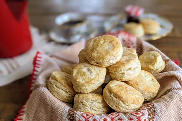

Basic Biscuits

Description:
Looking for a homemade biscuit recipe that's perfect for beginners and experienced cooks alike? Your search ends here. This tried-and-true recipe is beloved by the Allrecipes community because it's easy to make with just five ingredients, it calls for kitchen staples you probably already have on hand, and it's absolutely delicious.
Ingredients:
- Flour: All-purpose flour holds the ingredients together. Also, the protein in flour (when combined with moisture and heat) creates gluten, which provides structure.
- Baking Powder: Baking powder, not yeast, is used as a leavener in this easy biscuit recipe. It causes the dough to expand, giving the biscuits volume and texture.
- Salt: Salt acts as a flavor enhancer and it strengthens the protein in the dough.
- Shortening: Shortening is made of purely fat, unlike butter which contains water and milk solids. This means it's better at reducing (or "shortening!") gluten strands, resulting in a soft and crumbly biscuit.
- Milk: Cold milk adds moisture, flavor, and structure to the biscuit dough.
Steps:
- Prepare the Dough: Sift the dry ingredients into a large bowl. Cut in the shortening, then add the milk. Mix until the dough is soft and doesn't stick to the side of the bowl.
- Knead and Roll: Turn the dough out onto a lightly floured surface and knead briefly. Roll the dough into an even sheet that's about ½-inch thick.
- Cut and Bake: Use a lightly floured biscuit cutter to cut out the biscuits. Place the cut biscuits on an ungreased baking sheet. Re-roll the dough, repeating the cutting process, until all the dough is gone. Bake until golden brown.